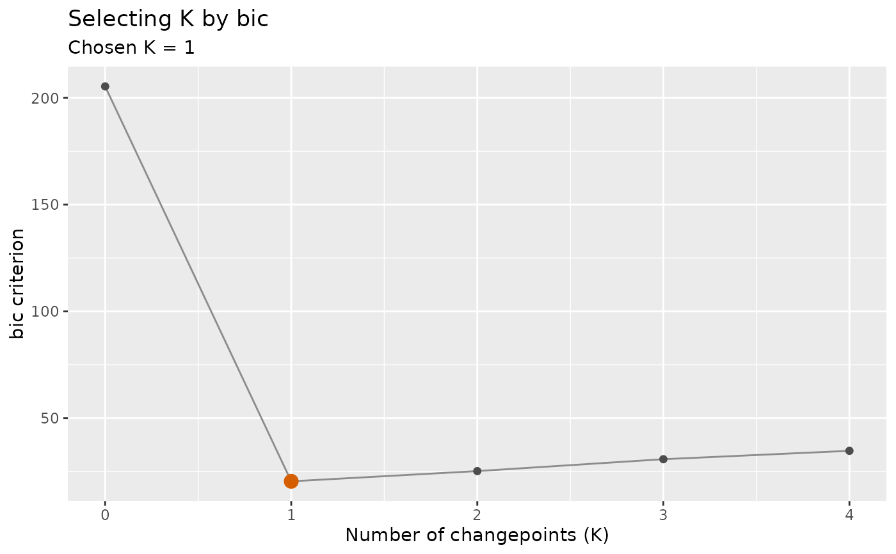
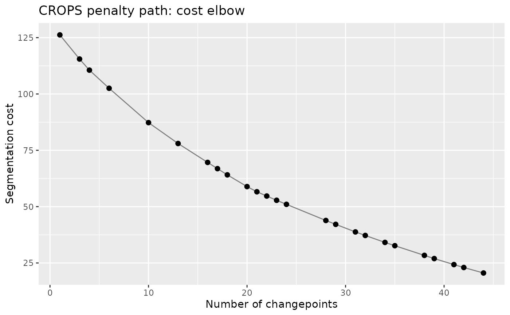
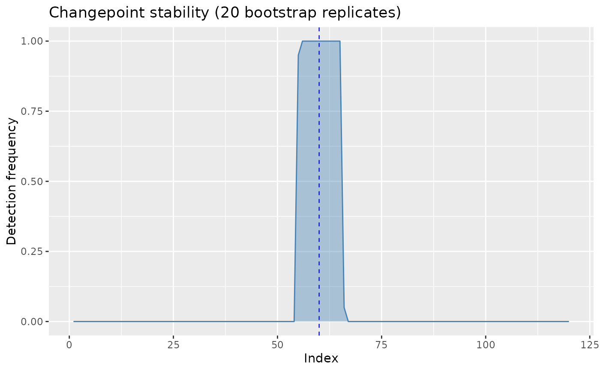
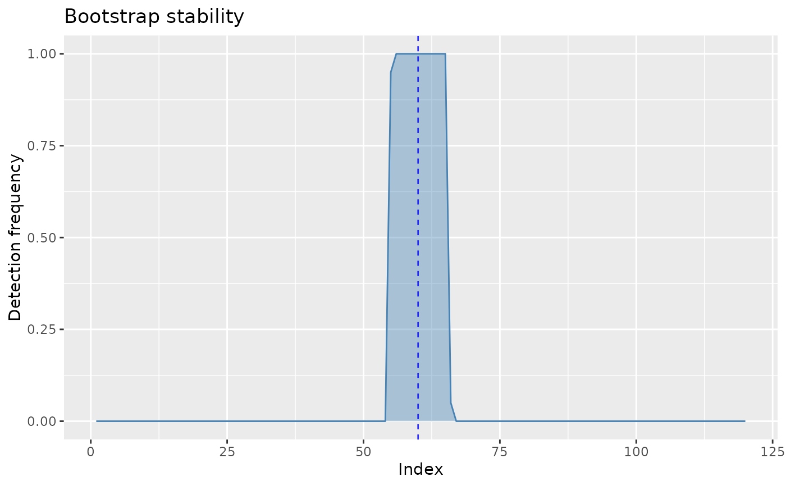

Every result class in the package has an autoplot() method, but
plot() is the reflex most users reach for first. Without a method,
plot() on a list-shaped result falls through to
plot.default and fails with 'x' is a list, but
does not have components 'x' and 'y' – a message that names neither this
package nor autoplot(). These methods delegate to the corresponding
autoplot() method so that plot(result) draws the intended
figure.
Usage
# S3 method for class 'ggcpt_selection'
plot(x, ...)
# S3 method for class 'ggcpt_stability'
plot(x, ...)
# S3 method for class 'ggcpt_sensitivity'
plot(x, ...)
# S3 method for class 'ggcpt_influence'
plot(x, ...)
# S3 method for class 'ggcpt_batch'
plot(x, ...)
# S3 method for class 'ggcpt_benchmark'
plot(x, ...)
# S3 method for class 'ggcpt_consensus'
plot(x, ...)
# S3 method for class 'ggcpt_monitor'
plot(x, ...)
# S3 method for class 'ggcpt_delay'
plot(x, ...)
# S3 method for class 'ggcpt_path'
plot(x, ...)
# S3 method for class 'ggcpt_power'
plot(x, ...)
# S3 method for class 'ggcpt_events'
plot(x, ...)
# S3 method for class 'ggcpt_label_curve'
plot(x, ...)Arguments
- x
A result object created by one of the package's
cpt_*()functions.- ...
Passed to the corresponding
autoplot()method.
Details
The plot is drawn as a side effect and the ggplot object is returned
invisibly, so plot() works inside a loop or a function while
p <- plot(result) still gives you the object to add layers to.
See also
autoplot.ggcpt; ggcpt_methods for the
ggcpt class itself.
Examples
set.seed(2024)
x <- c(stats::rnorm(60), stats::rnorm(60, 4))
plot(cpt_select(x, method = "pelt", criterion = "bic", k_max = 4))

plot(cpt_crops(x, pen_min = 1, pen_max = 30))

# the object is still available to build on
p <- plot(cpt_stability(x, method = "pelt", B = 20, seed = 1))

p + ggplot2::labs(title = "Bootstrap stability")
